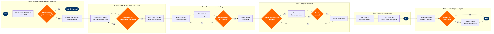

| Step | L4 Step Name | KPI / Target | Pain Point / Risk | Gate |
|---|---|---|---|---|
| 1.1 | Detect Warranty-Eligible Maintenance Event | Warranty event capture rate ≥95% of eligible removals | AMOS warranty flag relies on manual technician input; missed flags cause unrecoverable cost leakage when discovery exceeds OEM claim window (typically 90 days) | |
| 1.2 | Validate Warranty Coverage Against OEM Contract | Coverage determination completed within 2 business days of event flag | OEM warranty terms scattered across multiple Ariba contract line items; exclusions for airline-induced damage (e.g. FOD, corrosion) frequently disputed without clear documented threshold | ⚠ |
| 1.3 | Confirm Component Airworthiness History | History pull completed within 1 business day | CAMP component records can have gaps when aircraft are acquired from lessors or third-party MROs; incomplete records lead to OEM claim rejection citing unverifiable maintenance history | |
| 2.1 | Gather Supporting Work Orders and Borescope Evidence | Documentation pack assembled within 5 business days of removal | Borescope images stored outside AMOS in file shares; retrieval is manual and inconsistent — OEMs (CFM, Pratt & Whitney) require image sets in specific DPI/format standards or reject claims on technical grounds | |
| 2.2 | Assess Documentation Completeness Against OEM Checklist | First-time claim submission completeness rate ≥88% | Each OEM (Airbus, CFM, Honeywell, Collins Aerospace) has different checklist formats and portal requirements; maintaining current versions of each OEM's checklist is a manual process with no automated update feed | ⚠ |
| 2.3 | Build Formal Warranty Claim Package | Claim value accuracy within ±5% of final settlement | Labour rate and material cost calculations reference SAP actuals — discrepancies between AMOS work order cost codes and SAP cost centres cause reconciliation errors that delay settlement | |
| 3.1 | Submit Claim via OEM Vendor Portal | Claim submitted within 30 days of component removal (OEM SLA compliance) | OEM portals (Airbus WSC, CFM TEAM, Honeywell MyAerospace) each have unique interfaces; no API integration with AMOS/Ramco means double-entry and high rework rate (~25%) for portal validation errors | |
| 3.2 | Register Claim in Warranty Tracking Register | 100% of submitted claims logged within same business day | AMOS warranty module not universally adopted — some analysts maintain parallel spreadsheet trackers creating version drift and missed follow-up triggers | |
| 3.3 | Monitor Claim Status and Escalate on SLA Breach | OEM response within 30-day SLA for standard claims; escalation triggered within 5 days of breach | AMOS SLA alerting requires manual daily review; no automated push notification to account managers — high-value claims (>$50K) routinely age past SLA without escalation | ⚠ |
| 4.1 | Review OEM Assessment and Determination | Claim acceptance rate ≥70% of submitted value | OEMs commonly invoke exclusion clauses (FAR Part 43 compliance gaps, improper storage, FOD) with limited technical substantiation — airline burden of proof is high and legal recourse under IATA ATA Spec 200 is slow | ⚠ |
| 4.2 | Escalate Disputed Claims to Commercial Team | Dispute initiated within 10 business days of unsatisfactory determination | Airlines with smaller fleets or lower OEM spend have limited commercial leverage — Boeing and CFM prioritise high-volume operators; dispute resolution timelines can exceed 180 days for turbine-module claims | ⚠ |
| 4.3 | Prepare Technical Counter-Evidence Package | Counter-evidence submitted within 15 business days of dispute initiation | AD compliance records in CAMP may not cross-reference superseded bulletins; if OEM cites a service bulletin the airline cannot prove was complied with, the claim is unrecoverable | |
| 5.1 | Process Approved Warranty Credit or Replacement Part | Credit posted within 5 business days of OEM approval; replacement part receipted against correct maintenance order | OEM credit notes issued in vendor's currency (USD, EUR) — FX timing differences between AMOS claim valuation and SAP posting date create unexplained P&L variance in MRO cost accounts | |
| 5.2 | Close Claim and Update Warranty Register | Claim closure within 3 business days of financial settlement; register accuracy ≥99% | AMOS closure step is often skipped when analysts are under workload pressure — open claim backlog inflates apparent recovery pipeline and distorts management reporting | |
| 6.1 | Generate Warranty Recovery KPI Dashboard | Report published by 5th business day of each month; warranty recovery rate ≥3.5% of total MRO spend | AMOS-to-Tableau data pipeline is batch-refresh (T+1); real-time claim status not visible to Finance — monthly accruals for outstanding claims are estimated manually and frequently restated | |
| 6.2 | Analyse Claim Patterns and Trigger Vendor Review | Vendor review completed annually; rejection rate per OEM <15%; repeat claim rate on same part number <5% | Warranty rejection patterns (e.g. systemic CFM LEAP defect series) are not automatically correlated with fleet reliability data in Redshift — root cause identification requires manual cross-referencing across three systems | ⚠ |